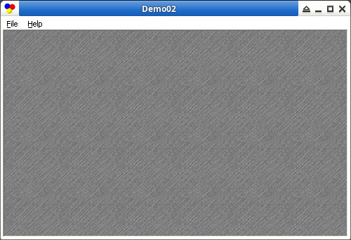

安裝檔案
參考資訊：
https://github.com/ObjAsm
https://objasm.x10host.com/index.htm
司徒目前是使用Box86 + Wine當作開發測試環境，Box86可以用來執行Intel x86指令集的程式，Box64則是可以用來執行Intel x64指令集的程式，而Wine則是可以用來跑Windows程式，Wine是Windows API層相容，但不是二進制層相容，意思就是，如果Wine是ARM armhf版本的話，Wine執行的程式就必須是ARM armhf指令集的程式，而如果Wine是Intel x86/x64版本，Wine執行的程式就必須是Intel x86/x64指令集的程式，這也是為何Windows PE程式(Intel x86/x64)可以在Linux PC(Intel x86/x64)下用Wine來執行的原因，而司徒目前是要在手機(ARM aarch64)上開發Windows x86/x64程式，所以才需要使用Box86 + Wine，司徒使用的Wine版本支援Intel x86(wine)/x64(win64)程式，安裝步驟如下：
$ cd $ wget https://github.com/steward-fu/website/releases/download/pro1/Box86-64_Wine86-64.sh $ chmod a+x ./Box86-64_Wine86-64.sh $ ./Box86-64_Wine86-64.sh $ WINEPREFIX=~/.wine_x86 box86 wine winecfg
如果字型太小，建議DPI設定成144
安裝檔案
$ cd
$ git clone https://github.com/steward-fu/wadk
$ sudo mv wadk /opt
$ cd
$ git clone https://github.com/Terraspace/UASM -b v2.57r
$ cd UASM
$ make -f Makefile-Linux-GCC-64.mak -j4
$ sudo cp GccUnixR/uasm /usr/local/bin
$ uasm --help
UASM v2.57, Dec 21 2025, Masm-compatible assembler.
Portions Copyright (c) 1992-2002 Sybase, Inc. All Rights Reserved.
Source code is available under the Sybase Open Watcom Public License.
$ sudo apt-get install gcc-mingw* -y
接着測試是否可以正常執行程式
$ WINEPREFIX=~/.wine_x86 box86 wine /opt/wadk/objasm_linux/Examples/X/Demo02/Demo02.exe
